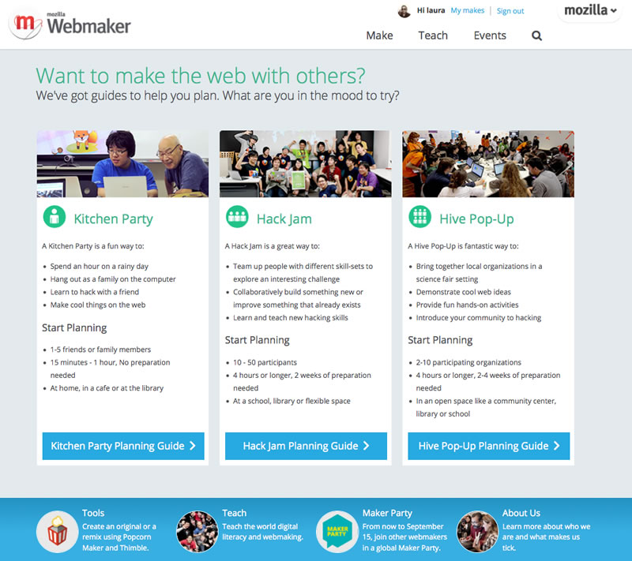
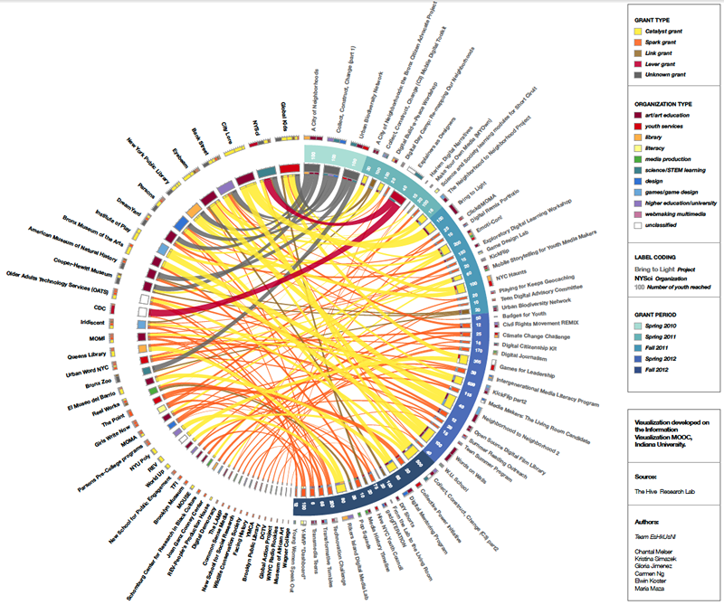
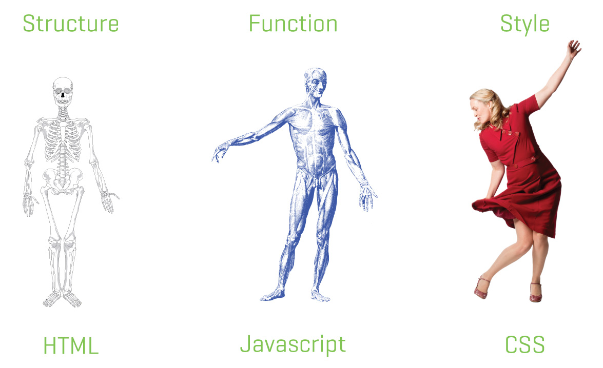
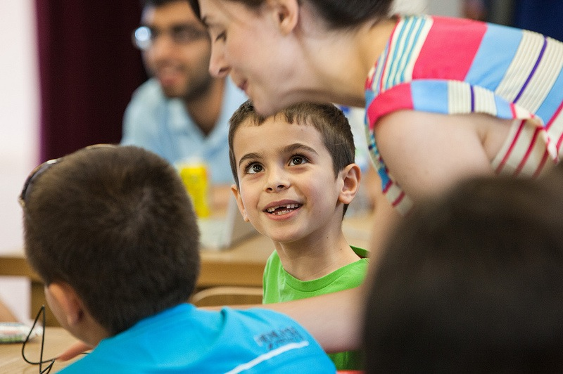
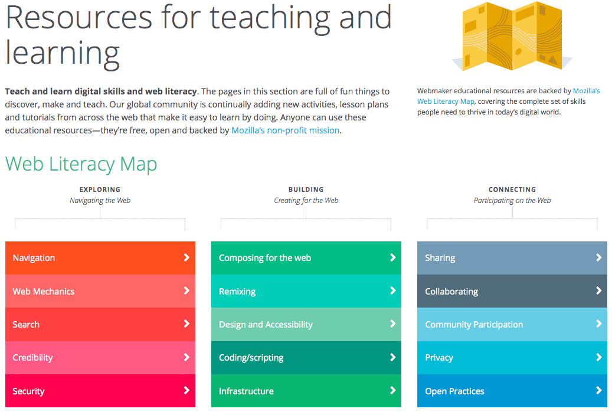

Howdy! We are Laura Hilliger and Chris Lawrence. We hacktivate learning at Mozilla by helping a global community of lifelong learners build and teach the web.
Questions?
@mozteach, #teachtheweb
Want more?
webmaker.org/teach

Mozilla - they make Firefox, right?
Yes, we make Firefox, but...
is a community of people united by a common purpose – to build the Internet society needs. We think we need an Internet that is open, so we can make and do more.
is a mission driven, non-profit organization.
Mozilla's mission is to promote openness, innovation and opportunity on the web.- The Mozilla Mission
Individuals must have the ability to shape their own experiences on the Internet
Photo by Matt Thompson
Making as Learning
- Interest driven, project based learning
- Connecting head and hand
- Really not a new idea
- #MakerParty
Open Educational Resources
- Open, Free, Remixable
- Aligning to the Web Literacy Standard
- Made by a coalition of educators, technologists, artists, etc
- webmaker.org/teach
Teaching Kits
- Modular
- Customizable
- Of the Web, for the Web
- Make your own

Blended-Learning
- Both the production and consumption of learning materials is blended
- various workshop formats
- in-person crash courses
- online and offline materials
Learning Events
Hive Learning Networks
Hive NYC Members

Network Engagement
- Tools - tools that support remixing, making and sharing on the web, while building learning into the process. Thimble, Popcorn Maker and X-ray Goggles for now.
- Makes - projects, challenges, games and content that sit on top of the tools and guide people in making cool stuff and provide instructions and learning objectives.
- Badges - marking learning as it happens all across the web.
- Events - Webmaker comes to life through a global community creating projects and events, teaching more Webmakers and scaling impact.
We are

Doing good is part of our code
And speaking of code...
The Web is built with code.
HTML, CSS and Javascript
The basic building blocks of the Web.

Look under the hood
with the XRay Goggles

Understanding the Web is a part of being educated.
- Klafki said you are educated when you can think critically about key problems
- The Web holds (most of) the world's information and humanity's knowledge
- It gives us an infrastructure to consider those problems and to help solve them (but only if we have the competencies and skills to do so)
- We need to be able to read as well as write
Program or be programmed
Learn to write
with Thimble
Understanding code isn't enough.
The 4th "R" and Beyond
We need to understand the web, which means understanding how computers work, but Web Literacies are also about the social skills that go with living in a digital world. Collaboration, Storytelling, Community, Civic Engagement, Self-Expression, Conviction, Critical Thinking...
Spreading a Movement
We live in a digital world.
- Our global knowledge ecosystem is the World Wide Web
- The Internet has become an important piece of our infrastructure
- We use the Internet to communicate, to work, to make decisions
- We need it to fully participate
the digital world is GIGANTIC
and Mozilla is rather small.
But Mozillians are passionate, and passion can lead to a better world.
one more thing...
one more thing...
YOU can help by sharing webmaking. https://webmaker.org/
https://etherpad.mozilla.org/helpteachtheweb